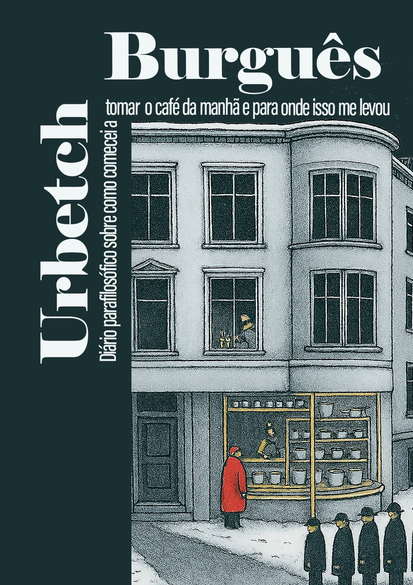
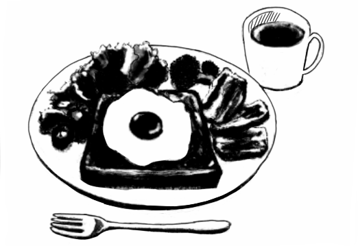
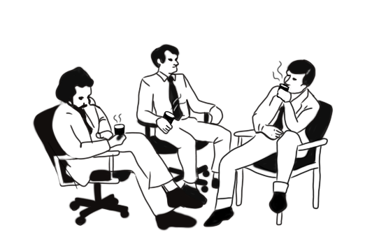
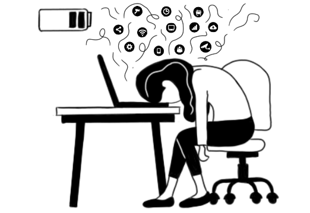

01 · Provar
Trecho gratuito
Abra o prólogo e as primeiras perguntas antes de decidir. É o convite mais leve para entrar no clima do livro.
Ler agoraNove cafés da manhã, nove perguntas sobre sentido da vida, ansiedade, autonomia e o barulho do mundo moderno. Nenhuma resposta pronta.
Não é autoajuda
Urbetch burguês, de Konstantin Khudiakôv, é um diário parafilosófico publicado em português brasileiro pela Editora Imagina. O livro transforma um ritual cotidiano em uma conversa sobre propósito, trabalho, desejo, informação e autonomia intelectual.
A experiência começa com pessoas ativas que gostam de ler, estudar, criar, conversar e colocar em dúvida respostas prontas. Gente que vive entre trabalho, relações, ansiedade, curiosidade e vontade de pensar com mais autonomia.


Uma leitura curta, feita para abrir conversas longas.

A experiência acontece em cafés, clubes e espaços culturais parceiros.

O livro não promete consertar a vida. Ele ajuda a perguntar melhor.
Série local
Os encontros são pensados para pequenos grupos, com roteiro, trecho de leitura, materiais visuais e mediação local. Uma conversa simples de organizar, difícil de esquecer.
Primeiro passo
Comece pelo trecho, escolha o formato que combina com o seu ritmo e, se a pergunta ficar na cabeça, leve a conversa para a mesa.
01 · Provar
Abra o prólogo e as primeiras perguntas antes de decidir. É o convite mais leve para entrar no clima do livro.
Ler agora02 · Ler hoje
Para quem quer começar sem esperar entrega: compra digital pela Editora Imagina e leitura imediata.
Comprar e-book03 · Levar à mesa
Melhor para cafés, clubes de leitura, presentes e encontros presenciais da série 9 cafés, 9 perguntas.
Comprar impressoComo participar
Receba datas dos cafés, trecho gratuito e perguntas para conversar.
Receba exemplares, roteiro simples, QR e materiais para apresentar o livro aos visitantes.
Conduza uma conversa pequena com trecho, perguntas e apoio assíncrono do autor.
O formulário recebe inscrições de pessoas leitoras, cafés, espaços culturais, mediação local e imprensa/parcerias.